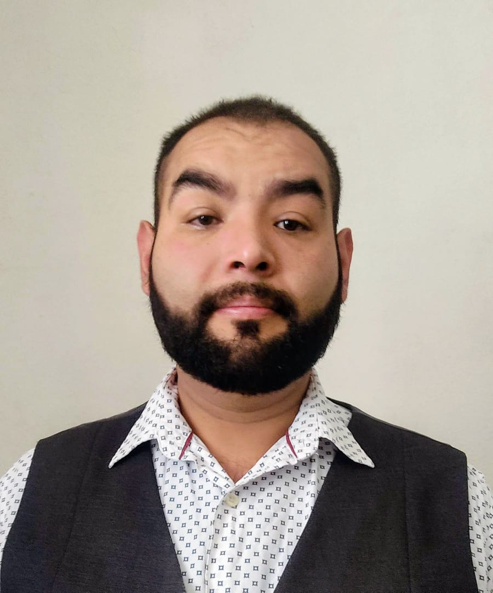

Edgar Flores García
Ingeniero en TI · Especialista MDM/UEM y Ciberseguridad
- Correo: edgar.flores290789@gmail.com
- Teléfono: +52 56 4432 6915
- Ubicación: Nicolás Romero, Edo. Méx.
- LinkedIn: linkedin.com/in/edgarfloresti
Perfil profesional
Ingeniero en TI con más de 10 años de experiencia, especializado en MDM/UEM y Endpoint Management. Administré Ivanti Neurons para 32,000 usuarios con dispositivos Android e iOS en banca y resolví incidencias críticas en Samsung Knox. Experiencia en ciberseguridad (SOC, Fortinet, Trend Micro), redes Cisco y gestión de proyectos Agile y PMP. En certificación: Microsoft Intune (MD-102) y Google Workspace.
Experiencia laboral
Especialista Samsung Knox (externo)
- Recuperé la flota de celulares Samsung (A55, A56 y A57) de un banco que había perdido su enrolamiento.
- Configuré y cargué los dispositivos en Knox Configure y Knox Manage.
- Guié el reenrolamiento masivo en sesiones remotas de 100 usuarios; el cliente extendió el servicio.
Consultor de TI independiente
- Instalé control de acceso con chapas magnéticas y 4 cámaras para un operador global de telecomunicaciones.
- Implementé rack de pared y hub de video analógico a UTP en 2 tiendas.
- Instalé nodos de red y suministré equipo de cómputo a empresas cliente.
Analista de Ciberseguridad SOC N1
- Monitoreé eventos de seguridad en firewalls FortiGate y Trend Micro (Vision One, Deep Security, Apex Central).
- Analicé alertas de phishing, spam y malware en Trend Micro Email Security (cuarentenas y hashes).
- Generé reportes cada 4 horas en FortiAnalyzer para clientes corporativos.
- Ejecuté health checks de Deep Security, revisión de vulnerabilidades en FortiGuard PSIRT y monitoreo de conexiones SPEI para una institución bancaria.
Especialista Ivanti / MobileIron para BBVA
- Administré Ivanti Neurons (R121) para 32,000 usuarios activos con celulares y tabletas Android e iOS (52,000+ dispositivos registrados).
- Ejecuté altas masivas por Bulk Import CSV y asigné unidades especiales.
- Documenté el Manual Maestro de Administración con 90 políticas técnicas (identidad/PKI, hardening, MTD).
- Diseñé protocolos de borrado remoto con resguardo de evidencia por robo, jubilación y bajas de inventario.
- Implementé PIN de 6 dígitos, certificados SCEP y protección MTD (Zimperium).
Kanban Master – Gestión de Migración
- Lideré el plan de migración a una nueva arquitectura con NAC restrictivo: 60 de 66 edificios migrados (91%).
- Coordiné equipos internos y externos con Kanban/Agile y seguimiento diario en Jira.
Ingeniero de Campo
- Instalé infraestructura Cisco (switches, routers, access points) en migraciones nacionales de tiendas.
- Brindé soporte técnico a 22 tiendas de autoservicio en la zona sur y centro de la CDMX.
- Configuré equipos de radiofrecuencia, impresoras de etiquetas, verificadores y software de punto de venta.
Ingeniero de Soporte Técnico
- Atendí 44 estaciones de servicio a nivel nacional.
- Mantuve dispensarios y control volumétrico; di soporte a consolas, servidores y cableado estructurado.